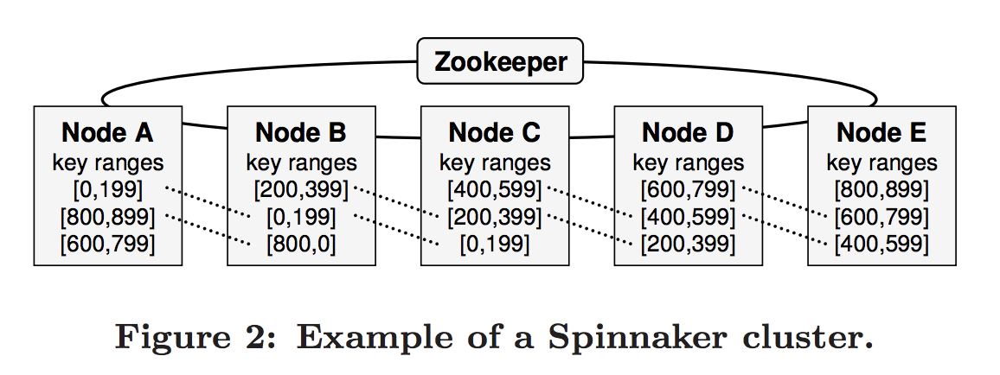
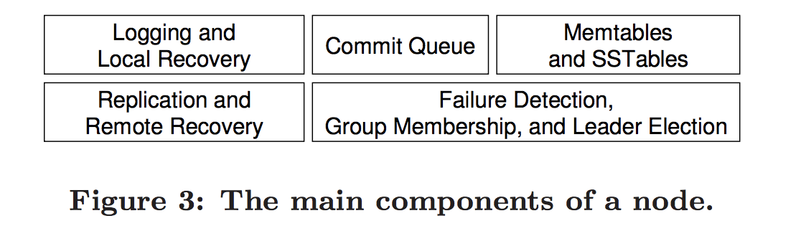
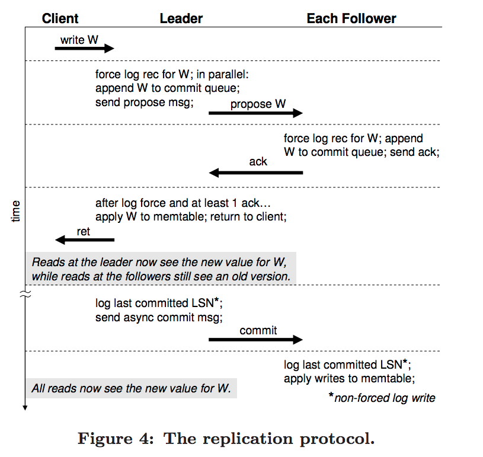

即阅读和学习论文 Using paxos to Build a Scalable, Consistent and Highly Available Datastore
Spinnaker是一个实验性质的数据存储, 运行在数据中心的普通集群机器上面, 有如下几个特点:
key-based range partitioning3-way replicationtransactional get-put APISpinnaker使用了以paxos为基础的备份协议, 它保证了在集群中有大部分机器没有宕机时, 读写的可用性, 与传统的Master-slave不同, 传统的Master-slave当大部分机器宕机时, 仍然会执行错误的操作.
一个分布式系统最多只能同时满足, 一致性(Consistency), 可用性(Availablity), 分区容错性(Partition tolerance)之中的两种.
ACID, Atomicity, Consistency, Isolation, and DurablilityBASE, 即Basically Available, Soft State, Evental consistencyMaster-Slave Replication在传统的主备同步复制策略中2-way synchronous replication, 两个节点中的一个节点被指派为Master节点, 所有的写操作都会被路由到Master节点上面. Master先将日志传输到Salve上面, 只有当Salve保存日志到本地并给Master返回成功, Master才会强制提交本次操作.
对于特殊情况:
Salve奔溃了, Master可以在没有Salve的情况继续正常工作.Master奔溃了, Salve上面的状态是最新状态, 可以替代Master正常工作Master-Slave的同步复制模型可以处理一般情况下的单一节点奔溃. 但是由一个数据库奔溃导致的问题, 往往可以导致发生一系列连续的错误. 即当主备都发生奔溃之后, Master-Slave会导致数据的不一致性,
Paxos和Raft这种分布式一致性算法可以很好的解决此类问题.
Strong vs. Eventual Consistency在分布式系统中, 一致性模型描述了不同的replica节点之间如何进行同步.
replica是相同的, 即状态和数据.CAP理论, 即在不牺牲可用性或者数据分片性的情况下是不可能达到强一致性的.Dynamo 使用最终一致性以及高可用性和数据分片在 跨数据中心的集群 上面, 对于最终一致性, Dynamo使用向量锁来实现即vector lock.
Spinnaker的数据模型和api与BigTable比较类似. 数据被一行一行的存储, 每一个以其key作为唯一主键进行区分. 每一行数据可以有任何数量的列作为其corresponding values. 其中列的名字和值对于Spinnaker来说是不可见的字节.
get(key, colname, consistent)读取某个key对应的某一列的值和其version. consistent为标志位
consistent: True 则选择强一致性模型选择最新的一个数据.consistent: False 则选择时间线一致性模型timeline consistency, 为了更好的性能则有可能会返回一个脏数据.put(key, colname, colvalue)插入某一key对应的一个列的k,v
delete(key, colname)删除某一key对应一个列的看,v
conditionalPut(key, colname, value, v)在某一个key对应的行中插入某个新的列, 如果当前行的version等于v则成功, 否则返回错误.
conditionalDelete(key, colname, v)类似于conditional put
version number是单调递增的整数, 通过spinnaker来管理, 并且通过get操作获得. verison number用在条件插入和条件删除, 提供了对于某一行进行简单方式的读写修改事务. 即相当于使用version number优化了并发控制. Version的并发控制类似于MySQL中的多版本并发控制的实现。
Spinnaker的集群架构和BigTable有相似的地方, 对于集群的分割都采用range partition.

Node ArchitectureSpinnaker的Node主要由如下几个组件构成. 其中所有的组件都是线程安全的, 并且每个节点上面都有3个key range的数据. 一个分片的读头部日志可以由指定的logging硬件来处理, 这样可以提高效率. 每个log都被LSN(log sequence number)唯一的确定. 为了共享同样的log, 在同一个节点上面的log使用同一节点的逻辑LSN. Commit Queue是一个主要的内存数据结构用来跟踪写的队列. 写操作当接受到logging节点上面的ack有效的信号时, 则该写操作则会被提交. 同时这次提交也会被存储到提交队列中.
注意: Commit Queue是在内存中用来记录操作的序号, 不会存储具体log信息

已提交的写操作在memtable中, memtable的作用是定期的对数据进行排序并且写入不可变的磁盘存储中即SSTables的数据结构中. SSTable以key和colunm name来作为索引, 这样可以提高操作的效率. 在后台小块的SSTable将会被合并成大的块, 这样可以提高读的效率. SStable的数据结构是以Big Table作为设计基础.
Zookeeper 被用来处理错误容灾, 和分布式微服务. Zookeeper提供了一个中心化的地方去存储meta data即配置文件, 并且管理诸如节点奔溃这样的事件.
Zookeeper在设计上面简化的Spinnker, 最初Zookeeper的设计使得可以很容易的实现分布式锁, 屏障(barriers), 以及组关系(membership)等.
The Replication Protocol这一章节描述了Spinnker的备份协议, 该备份协议运行在一个集群的机器上面. 具体如下图:
每个备份集群有一个已选出的leader和其他两个follower, 备份协议有两段组成,分别是: leader election和quorum phase.
leader election: 即领导选举quorum phase: 即领导向followers发出写的请求, followers接受并返回ack. 在没有失败的情况发生时, 通常只有quorum phase执行.
上图表示整个备份协议的具体过程:
key找到对应的key-range, 将此次操作路由到对应的leader上面, 然后leader节点将写操作放进入commit queue, 并且并行的写入本地磁盘, 并向followers节点发出写入请求.followers接受到了请求的消息, 将log写入本地磁盘, 并且将写操作放入commit queueleader接受到了至少1个节点的ack, 则这个时候leader将写操作放入memtable, 真实有效的提交本次写操作. 持久化本次的log.leader返回给客户成功的response